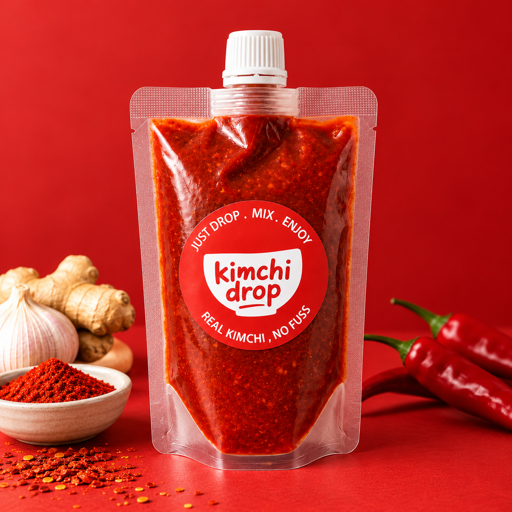
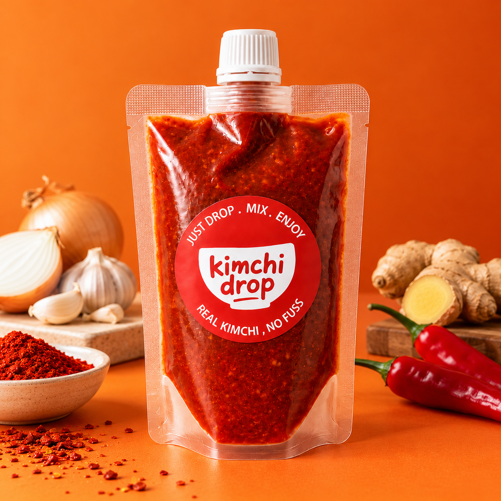
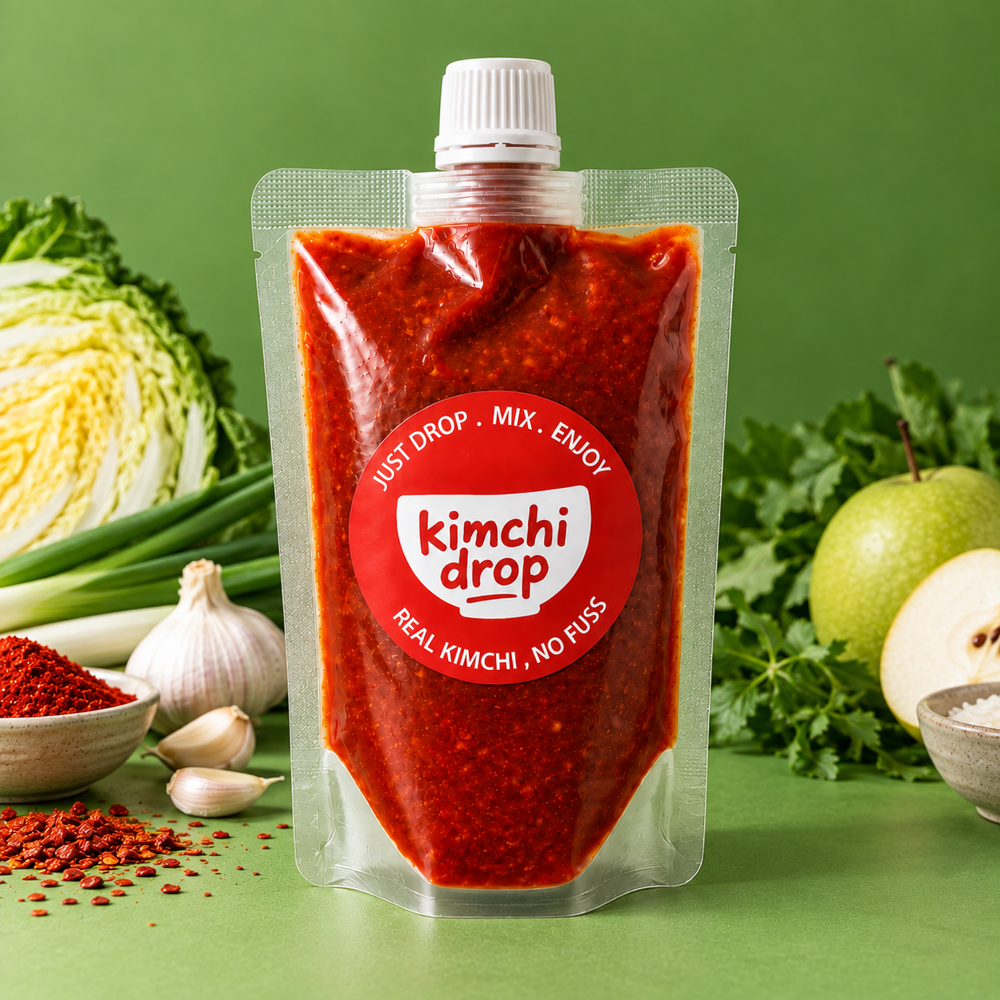
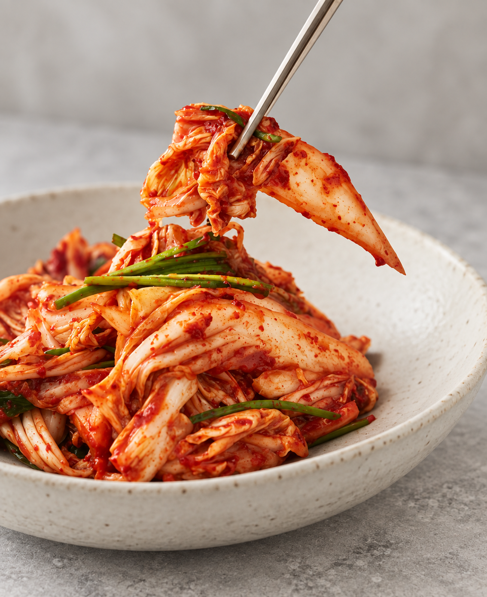

Original
🌶️🌶️🌶️ Recreates the classic kimchi flavour with an authentic, traditional taste.
Gluten freeNo added preservatives
No artificial coloursNo artificial sweeteners
Our Story
Kimchi Drop began with two Korean sisters living in Australia. One simply loved kimchi. The other wanted to make wholesome kimchi for her child.
We knew the best part of kimchi was making it your own — your vegetables, your flavour and your perfect level of fermentation. But even for Koreans, making it from scratch can feel like a lot.
So we created an easier way. Kimchi Drop helps anyone experience the joy of making fresh, homemade kimchi with real ingredients, just the way they like it.
Our Products
ORDER ONLINE →
🌶️🌶️🌶️ Recreates the classic kimchi flavour with an authentic, traditional taste.

🌶️🌶️🌶️ A milder option for those who enjoy kimchi with less heat.
🌶️ A milder option for those who enjoy kimchi with less heat.

🌶️🌶️🌶️ No fish sauce or salted shrimp. Made with a coconut-based vegan fish sauce.
How It Works
Add Kimchi Drop to your prepared vegetables.
Coat every leaf with rich Korean flavour.
Eat it fresh or ferment it until it tastes just right.
RECIPES
More ways to drop bold flavour into everyday food.

Fresh, crunchy and full of flavour.
VIEW RECIPE →INGREDIENTS
METHOD
FIND US
Taste it. Try it. Take a drop home.
EVERY SATURDAY · 9 AM–1 PM